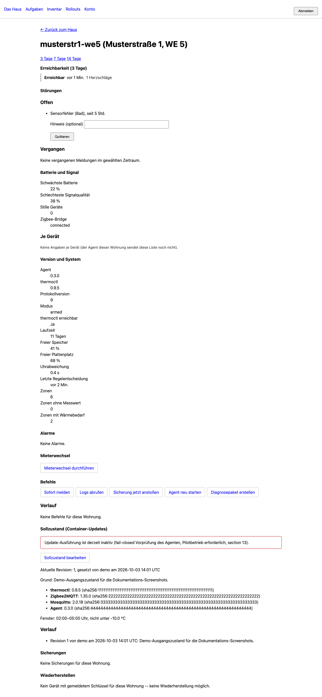
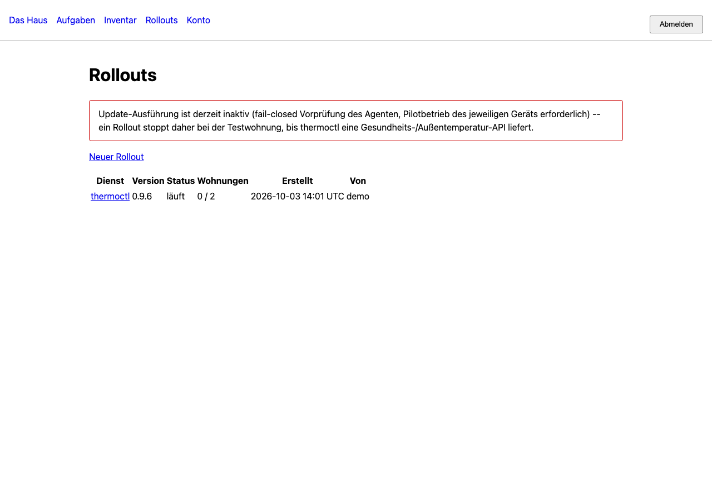

Täglicher Betrieb
Drei Ansichten, nicht mehr (Abschnitt 9 der Spezifikation): das Haus, eine Wohnung, die Aufgabenliste. Wer nichts zu tun hat, sieht eine ruhige Oberfläche -- das ist Absicht.
Das Haus
Eine Kachel pro Wohnung: Name, letzter Kontakt, Modus, offene Störungen, Version. Sortiert nach Handlungsbedarf, nicht nach Nummer.

Eine Wohnung
Heartbeat-Verlauf der letzten Tage (Erreichbarkeit, nicht Temperatur), offene und vergangene Störungen, Batterie- und Signalwerte pro Gerät, Version, sowie die vier bis sieben erlaubten Befehle als Schaltflächen mit Bestätigung.

Störungen und Quittierung
Die sechs thermoctl-Störungsarten (sensor_fault, bridge_fault,
command_failure, stuck_sensor, window_alarm,
tenant_report) laufen in der Cloud zusammen. Eine Quittierung gilt nur für
das aktuelle Auftreten -- tritt dieselbe Störung erneut auf, erscheint sie wieder.
Beim Mieter-Problembericht (tenant_report) wird nur übertragen, dass
einer existiert, mit Zeit und Raum -- der Text selbst bleibt in der Wohnung
(Abschnitt 6).
Alarme
| Alarm | Auslöser | Dringlichkeit |
|---|---|---|
| Wohnung meldet sich nicht | drei Heartbeats fehlen (6 Minuten) | hoch, während der Heizsaison |
| thermoctl antwortet nicht | Agent erreicht es lokal nicht | hoch |
| Steuerung steht still | letzte Entscheidung älter als drei Regelzyklen | hoch |
| Störung offen | eine der sechs Arten, länger als 2 Stunden | mittel |
| Batterie niedrig | schwächste Zelle unter 20 % | niedrig, gesammelt bis zur Batterierunde |
| Signalqualität fällt | schlechtester Wert unter 30, über mehrere Tage | niedrig |
| Versionsrückstand | Wohnung mehr als zwei Versionen zurück | niedrig |
| Speicher voll | unter 10 % frei | mittel |
| Uhrabweichung | mehr als 60 Sekunden | mittel (Zeitpläne laufen falsch) |
Jeder Alarm hat eine Entwarnung und ein Schlummern ("bis morgen früh"). Wiederholte Alarme derselben Art für dieselbe Wohnung werden gebündelt.
Befehle
| Befehl | Wirkung | Risiko |
|---|---|---|
report_now | Sofort einen Heartbeat senden, statt auf das Intervall zu warten | keines |
fetch_logs | Die letzten n Zeilen des Dienst-Logs, maskiert, an die Cloud | Inhalt, daher maskiert und auf 500 Zeilen begrenzt |
backup_now | Ein Datenbank-Backup auslösen und das Ergebnis melden | keines |
agent_restart | Nur den Agenten neu starten | keines |
Jeder Befehl trägt eine Id und wird höchstens einmal ausgeführt, hat eine Ablaufzeit (üblicherweise 15 Minuten), und jeder Befehl samt jeder Ablehnung landet im lokalen Protokoll der Wohnung -- nicht nur in der Cloud.
Backups & Restore
Zwei Arten von Backup, die nicht gemischt werden: Gerätekonfiguration (keine Mieterdaten, liegt in der Cloud im Klartext) und Betriebsdaten (thermoctl-Datenbank, Zigbee2MQTT-Gerätetabelle -- enthält Mieterdaten, wird auf dem Gerät verschlüsselt, bevor sie hochgeladen wird). Ein Restore läuft über dieselbe Oberfläche: der Entschlüsselungsschlüssel wird einmalig eingegeben, im Browser lokal für genau dieses Gerät verschlüsselt, und von der Cloud nur durchgereicht -- nie gespeichert.
Gestaffelte Rollouts
Updates laufen über Soll-Zustand, nie als Fernsteuerungsbefehl für eine einzelne Wohnung. Ein Rollout schaltet Wohnung für Wohnung weiter, mit Rückfallpfad auf die alte Version, falls nach dem Update 15 Minuten lang kein Heartbeat ankommt.

Mieterwechsel
Eine ausdrückliche Aktion in der Oberfläche (Bestätigung, Pflichtgrund, protokolliert) rotiert den Gerätetoken der Wohnung -- der Agent holt den neuen über eine signierte Herausforderung mit seinem bestehenden Geräteschlüssel, kein privater Schlüssel verlässt dabei je das Gerät -- und löscht die Heartbeats, Ereignisse, Störungen, Alarme, Befehlsprotokoll-Auszüge und Diagnosebündel der Wohnung. Verschlüsselte Backups bleiben, unter eigener Aufbewahrungsfrist.
Anmeldung
Passwort und TOTP, optional ergänzt durch einen Passkey (WebAuthn) als zweiten Faktor. Siehe Benutzer anlegen.
Passwortlose Anmeldung mit Passkey aus bekannten Netzen
Dieser Abschnitt wird gefüllt, sobald die parallele Entwicklung rund um
FLEET_UI_PASSWORDLESS_NETWORKS in main gemergt ist: eine
Liste vertrauenswürdiger Netze, aus denen heraus ein Passkey allein zur Anmeldung
genügt, ohne zusätzliches Passwort.